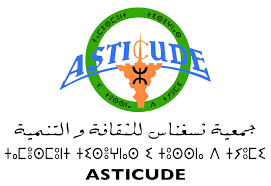
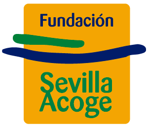
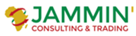
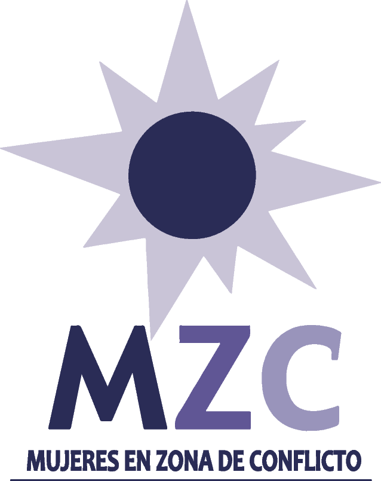
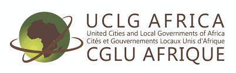
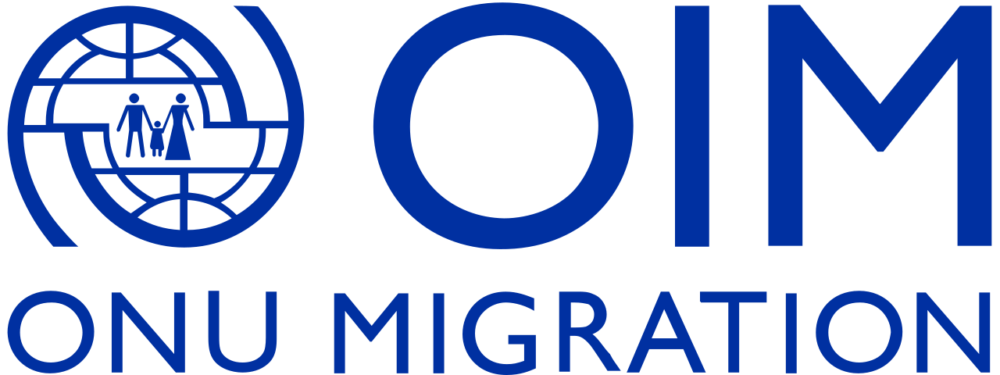
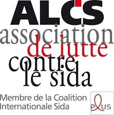

Missions Réalisées
2025 - 2026
Assistance technique d’appui
Les missions où nous avons accompagné des organisations :
2025 - 2026
Assistance technique d’appui
2025 - 2026
Assistance technique et Accompagnement.
2025
Expertise d’appui à la coopération décentralisée internationale
2025
Expertise d’appui à la coopération décentralisée internationale
2025
Accompagnement et formation de 15 AGR

2025
identification des obstacles à l'exercice des droits des jeunes filles et la mise en lumière des modèles et des expériences réussis
2025
Formation de renforcement des capacités

2025
Formation sur la gestion des activités génératrices de revenu
2024
Elaboration de la feuille de route et de plan d’action,consultance pour la formulation, ...

2024
Evaluation du projet : Rendre la migration bénéfique pour toutes et tous

2022 - 2024
Assistance technique d’appui à l’implémentation d'un programme

2024
Identification, mobilisation et formation des auto-entrepreneurs

2024
Formation sur le nexus migration, environnement et changement climatique
2024
Consultance d’appui à l’équipe finance sur la justification technique/financière finale du projet
2023
Formation et accompagnement sur la gestion des activités génératrices de revenu
2022 - 2023
activités d’études quantitatives et qualitatives d'un projet (EJM)
2021
Réflexion sur l'emploi des femmes subsahariennes au Maroc
2021
Implémentation des activités du Projet (Tanger Accueil)

2021
Continuité des soins de santé pour les enfants et les femmes migrant-e-s dans le contexte de la pandémie Covid-19 dans le cadre du projet UN Trust Fund